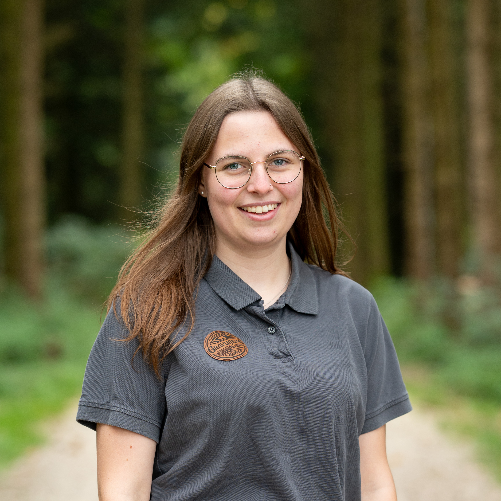

Retro-Webseite
Design und Umsetzung einer nostalgischen Portfolioseite mit warmen Farben, handschriftlichen Elementen und modernem Responsive Layout.

Ich gestalte digitale Erlebnisse mit einem Auge fürs Detail. Mein Stil verbindet kreative Retrofusion mit modernem Interface-Design und klarer Kommunikation.
Ich befinde mich in der Ausbildung zur Mediamatikerin und habe bereits Erfahrung in Grafikdesign, Webentwicklung und Kundenkommunikation gesammelt.
Ich arbeite gerne an Projekten oder erstelle Content für Social Media.
Design und Umsetzung einer nostalgischen Portfolioseite mit warmen Farben, handschriftlichen Elementen und modernem Responsive Layout.
Corporate Design für ein lokales Startup: Logo, Visitenkarten und Social Media Grafik mit Vintage-Anmutung.
Plakatgestaltung für eine Kulturveranstaltung mit Retro-Farben, Typografie im Neonschrift-Stil und klarer Struktur.
Ich freue mich auf neue Projekte, spannende Kooperationen und Austausch zu digitalem Design.
E-Mail schreiben